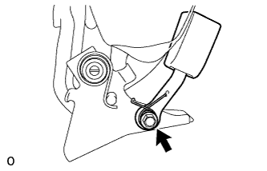
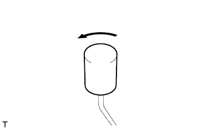

ЗАДНЕЕ СИДЕНЬЕ № 1 В СБОРЕ (складываемое вдвое раздельное сиденье 60/40 с левой стороны) > РАЗБОРКА |
| 1. СНИМИТЕ ПОДУШКУ ЗАДНЕГО СИДЕНЬЯ |
Выверните 2 винта и снимите 2 подушки.
| 2. СНИМИТЕ ЗАЩИТУ ЗАДНЕГО СИДЕНЬЯ |
Выверните 2 винта.
Освободите 2 крепления и снимите защиту.
| 3. СНИМИТЕ НИЖНЮЮ КРЫШКУ ПОДУШКИ ЛЕВОГО ЗАДНЕГО СИДЕНЬЯ |
С помощью съемника молдингов расцепите крепления и снимите крышку.
| 4. СНИМИТЕ ОБИВКУ ПОДУШКИ СИДЕНЬЯ ВМЕСТЕ С ПОДУШКОЙ |
Отсоедините хомут подушки сиденья от обивки подушки сиденья.
Освободите крепления и снимите обивку подушки сиденья вместе с подушкой.
| 5. СНИМИТЕ ОБИВКУ ПОДУШКИ ЛЕВОГО СИДЕНЬЯ № 1 |
 |
Срежьте закрепки и снимите защиту с подушки сиденья.
| *1 | Стяжка |
| 6. СНИМИТЕ ОБИВКУ ПОДУШКИ РАЗДЕЛЬНОГО ЛЕВОГО ЗАДНЕГО СИДЕНЬЯ |
Снимите витковые пружины и обивку подушки сиденья с подушки сиденья.
| 7. СНИМИТЕ ХОМУТ ПОДУШКИ ЗАДНЕГО СИДЕНЬЯ |
Снимите хомут, как показано на рисунке.
| 8. СНИМИТЕ ЩИТОК КРОНШТЕЙНА НОЖКИ ЗАДНЕГО СИДЕНЬЯ |
 |
С помощью съемника молдингов расцепите 4 захвата и снимите крышку.
| 9. СНИМИТЕ НАКЛАДКУ НОЖКИ ЗАДНЕГО СИДЕНЬЯ |
 |
Освободите захват и направляющую, а затем снимите накладку.
| 10. СНИМИТЕ ЗАМОК РЕМНЯ БЕЗОПАСНОСТИ ЛЕВОГО ЗАДНЕГО СИДЕНЬЯ № 1 В СБОРЕ |
|  |
Отверните болт и снимите замок ремня безопасности.
| 11. СНИМИТЕ ВНУТРЕННЮЮ ОТКИДНУЮ КРЫШКУ ЛЕВОГО ЗАДНЕГО СИДЕНЬЯ |
Выверните винт.
Освободите захват и направляющую, а затем снимите накладку.
| 12. СНИМИТЕ КРЫШКУ ЗАМКА СПИНКИ ЛЕВОГО ЗАДНЕГО СИДЕНЬЯ |
Выверните 2 винта.
Освободите 2 направляющих и снимите крышку.
| 13. СНИМИТЕ ЗАМОК СПИНКИ ЛЕВОГО ЗАДНЕГО СИДЕНЬЯ В СБОРЕ |
Снимите 2 витковые пружины.
Выверните 2 болта.
Перемещая кнопку разблокировки в направлении, указанном на рисунке стрелкой, отсоедините ее от втулки и снимите замок спинки сиденья.
| 14. СНИМИТЕ КНОПКУ РАЗБЛОКИРОВКИ ЗАМКА СПИНКИ ЗАДНЕГО СИДЕНЬЯ |
|  |
Снимите кнопку разблокировки, как показано на рисунке.
 | Против часовой стрелки |
| 15. СНИМИТЕ ИЗОЛИРУЮЩУЮ ВТУЛКУ КНОПКИ ОСТАНОВА СПИНКИ ЗАДНЕГО СИДЕНЬЯ |
Отсоедините 3 захвата и снимите втулку.
| 16. СНИМИТЕ ДЕРЖАТЕЛЬ ПОДГОЛОВНИКА ЗАДНЕГО СИДЕНЬЯ № 1 В СБОРЕ |
 |
Освободите 4 захвата и снимите 2 держателя.
| 17. СНИМИТЕ ОБИВКУ СПИНКИ СИДЕНЬЯ ВМЕСТЕ С ПОДУШКОЙ |
Снимите витковые пружины и освободите крепление, а затем снимите обивку спинки сиденья с подушкой.
| *1 | Крюк |
| *2 | Витковая пружина |
| 18. СНИМИТЕ ОБИВКУ СПИНКИ ЛЕВОГО РАЗДЕЛЬНОГО ЗАДНЕГО СИДЕНЬЯ |
Снимите витковые пружины и обивку с подушки спинки сиденья.
| 19. СНИМИТЕ КРАЕВОЕ УКРЕПЛЕНИЕ СПИНКИ ЗАДНЕГО СИДЕНЬЯ |
Отсоедините защитный элемент от рамы спинки сиденья.
| 20. СНИМИТЕ ЭЛЕМЕНТ ЗАЩИТЫ ПРАВОГО ЗАДНЕГО СИДЕНЬЯ № 1 |
Отцепите захват и снимите элемент защиты.
| 21. СНИМИТЕ ЭЛЕМЕНТ ЗАЩИТЫ ЛЕВОГО ЗАДНЕГО СИДЕНЬЯ № 1 |
Отцепите захват и снимите элемент защиты.